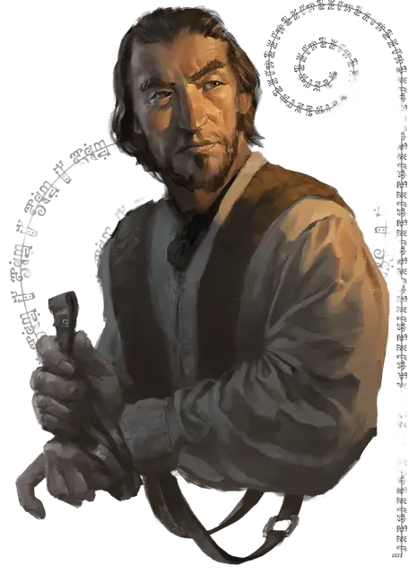

Отовир
Othovir
Средний Гуманоид (Человек иллусканец), законно-нейтральный, именной НИП

Класс Доспеха 10 (13 с доспехами мага)
Хиты 16 (3к8 + 3)
Скорость 30 футов
| мод | спас | ||
|---|---|---|---|
| СИЛ | 11 | +0 | +0 |
| ЛОВ | 10 | +0 | +0 |
| ТЕЛ | 13 | +1 | +1 |
| мод | спас | ||
|---|---|---|---|
| ИНТ | 12 | +1 | +1 |
| МДР | 14 | +2 | +2 |
| ХАР | 16 | +3 | +3 |
Навыки Обман +5, Проницательность +4, Убеждение +5
Чувства пассивное Восприятие 12
Языки Общий, Эльфийский
Опасность 0
Бонус мастерства +2
Особенности
Информация для отыгрыша. Отовир - одарённый изготовитель упряжи, который не говорит о своей семье или откуда он родом. Он заботится о своём бизнесе, своих клиентах, своём добром имени.
Идеал. : «Найди то, что удается тебе лучше всего и делай это изо всех сил».
Привязанность. : «Я не позволю запятнать своё имя.»
Слабость. : «Я начинаю злиться, когда кто-то сует нос в мою личную жизнь.»
Действия
Рапира. . Рукопашная атака оружием: +2 к попаданию, досягаемость 5 фт., одна цель. Попадание: 4 (1к8) колющего урона.
Использование заклинаний. Отовир накладывает одно из следующих заклинаний используя в качестве базовой характеристики Харизму (Сл спасброска от заклинания 13; +5 к броску атаки заклинанием). Он обладает следующими заготовленными заклинаниями чародея:
• Неограниченно: огненный снаряд [fire bolt] (1к10 урона огнём), фокусы [prestidigitation];
• 1/день каждое: доспехи мага [mage armor], волна грома [thunderwave], ведьмин снаряд [witch bolt].
Реакции
Парирование. Отовир добавляет 2 к своему КД против одной рукопашной атаки оружием, которая должна попасть по нему. Для этого Отовир должен видеть атакующего и держать в руке рукопашное оружие.